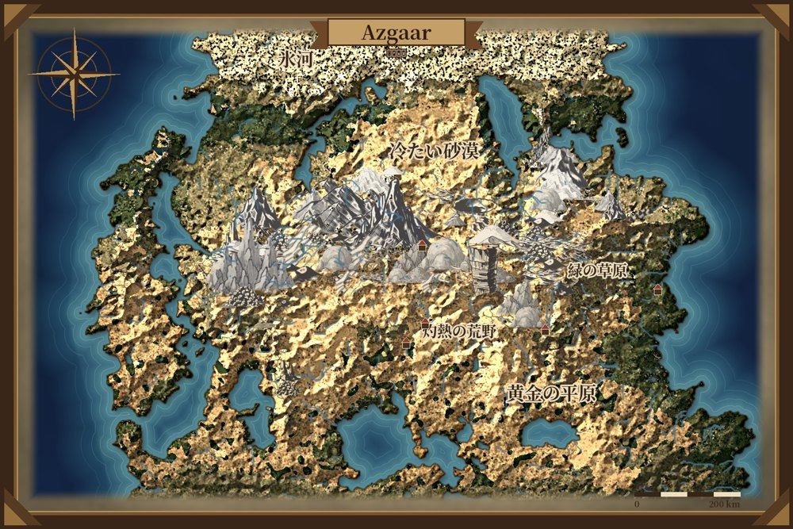
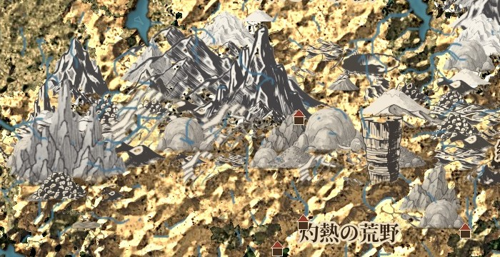
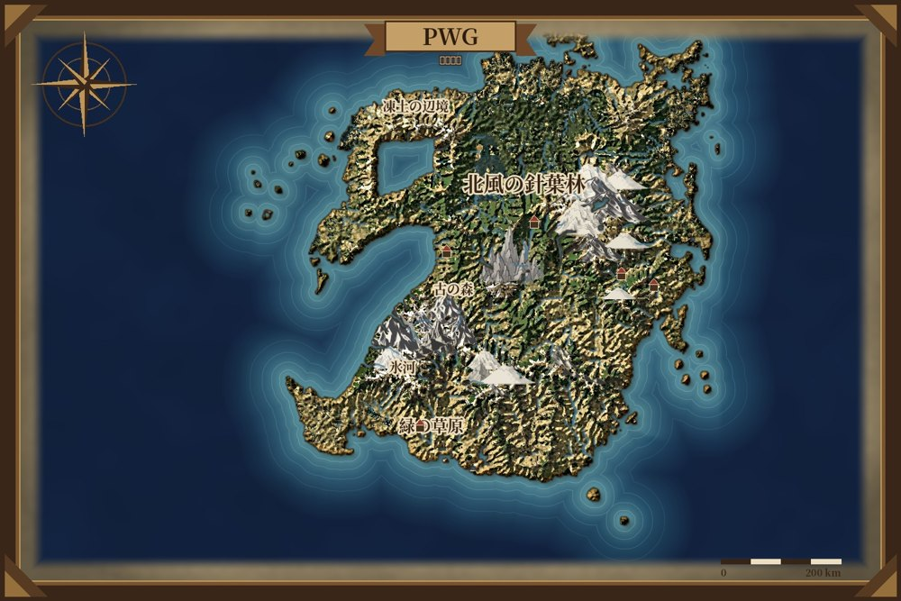
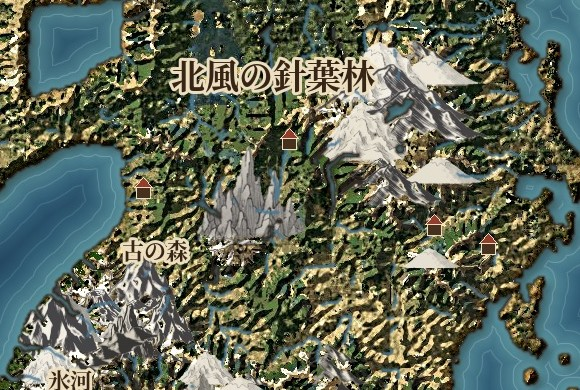

段階16: 部品から山を作る(試作)
概要: ユーザー案の5工程のうち、①部品②地形の点数との近さで選ぶ③地形から色を決める、④足もとをなじませる、までを実際の地図3枚に当てました(手調整なし)。部品の絵は点数表のとおり、場所の地形の点数(高さ・険しさ・寒さ・乾燥・湿潤・火山性・浸食台地・なだらか)と向きが近いものが選ばれて置かれます。
結果(3つの世界)
Azgaar


PWG


簡易生成

処理の時間とメモリ(実測)
| 全体の秒 | 最大メモリ | 置いた部品数 |
|---|
| Azgaar | 10.9 | 約600MB | 99 |
| PWG | 13.4 | 約600MB | 33 |
| 簡易生成 | 12.6 | 約600MB | 19 |
目視の評価
- 良い点: 山の外形が地形で変わった。高く険しい所は尖峰や大きな群れ、低い所は丘になる。線は元の絵のもので、前の自作より手描きらしい。
- 悪い点1: 色が灰色に寄り、特にAzgaarは冷たい青灰色で、下の砂色の地面から浮く。「寒さ」の点が広く効きすぎて雪色が強い(PWGの針葉林も白い)。
- 悪い点2: 丸い岩山や岩のごろごろが多く選ばれ、山脈の連なり感が弱い。山脈の「稜線で区切る」処理(⑤手前の地形を前に置く)が未実装のため、山が地面の上に置かれた切り絵に見える。
- 悪い点3: 山の数が少ない世界(簡易生成)はほぼ山が無い。
限界・未確認
- 各1枚・目視のみ。点数は私の推論の案で、ユーザー確認前。
- 火山性・浸食台地は乱数の場から仮の割合(4%・8%)で当てており、地球の分布の率は未調査。
- ⑤(手前の地形を前に置く)と、周りと合わない所の形の変更は未実装。
- 部品の絵は色の明暗だけ使い、色は私が地形から作った(Geminiの色付きの部品も灰色の明暗にしている)。
次: 色の寒さの効きを弱めて地面の色に寄せる、山の連なりの置き方を直す。
部品の一覧 / 点数表 / 前の段階15